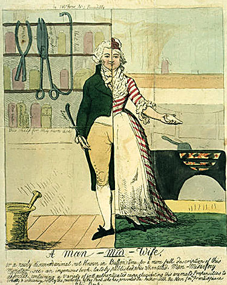

|
|
||
| see interactive version (requires Shockwave) |

At the end of the eighteenth century, some male doctors began to build their medical practices by assisting normal births, previously the exclusive sphere of women. A controversy raged in Britain and America about these new man-midwives while Martha Ballard practiced midwifery in Maine. The 1793 Man-Mid-Wife cartoon that you see above depicts one view of the controversy in the form of a "Monster," a half-male, half-female midwife.
|
|
|
||||||||||||||||||